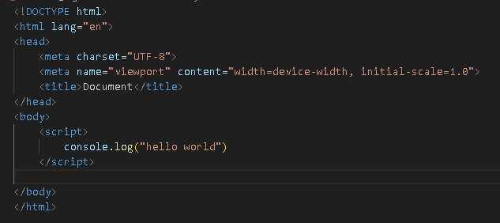

JavaScript Tutorial
Using the console Log
definition
console log is used for debugging purposes in the browser environment. It display information in the console box of the browser window.
definition
The syntax for console.log() is console.log(message_to_display)
Example of how to use console.log

Alert, Prompt and Confirm in javascript
This creates a dialogue boxes for the users to request a response from the user and to pause all the code in background until the request is satisfied.
all these are the methods of the windows object. This object is the highest level object that JavaScript can deal with in a browser.
Writing the windows is not necessary. Its presence is assumed even if omitted.
See the dialog_boxes.js file for the example on github page day1 folder
Variables in JavaScript
definition
Variables in JavaScript are containers for storing data values. They are declared using var, let, or const keywords. Variables can hold various types of data such as numbers, strings, arrays, objects, or functions. They allow dynamic manipulation and referencing of data within a program.
Syntax for declaring the variables
you can declare the variables with var, let and const keywords. for example
var name = "my name is jai"
let name = "my name is jai"
const name = "my name is jai"
How to use
- Use const for variables that should not be reassigned after initialization. This enhances code readability and prevents accidental reassignments.
- Use let for variables that need to be reassigned within their block scope. This promotes better code structure and reduces potential bugs related to variable reassignments.
- Use var sparingly, as it has function scope and can lead to unintended variable hoisting and redeclaration issues.
Note:In modern JavaScript, let and const are preferred due to their block scoping behavior and stricter rules, which help in writing more maintainable and predictable code.
Types of Values Variables can store
Variables can store data of many types which include
- Number:
let age = 30;
- String:
let name = "Jai";
- Boolean Values:
let value = True;
- Array:
let numbers = [1, 2, 3, 4, 5];
- Object:
let person = { name: "Alice", age: 25 };
- Function:
function greet(name) {
console.log("Hello, " + name + "!");
}
- Undefined:
let x; console.log(x);
- Null:
let y = null;
Datatypes in javascript
JavaScript has several built-in data types, categorized as primitive and non-primitive (or reference) types:
primitive Data Types
- Number : Floating-point numbers, e.g., 3.14, 42, -10.
- String : Textual data enclosed in single or double quotes, e.g., "Hello", 'JavaScript'.
- Boolean : Represents true or false values, e.g., true, false.
- Undefined : Default value assigned to variables that are not initialized, e.g., let x;
- Null : Represents the intentional absence of any object value, e.g., let y = null
- Symbol : nique and immutable data type introduced in ES6, used for creating unique identifiers,
e.g. const sym = Symbol("description")
Non-Primitive (Reference) Data Types:
- Object : Key-value pairs representing complex data structures, e.g., { name: "John", age: 30 }.
- Array :Ordered collection of elements, e.g., [1, 2, 3, 4, 5].
- Function :A reusable block of code, e.g., function add(a, b) { return a + b; }.
- Date :Represents dates and times, e.g., const now = new Date();.